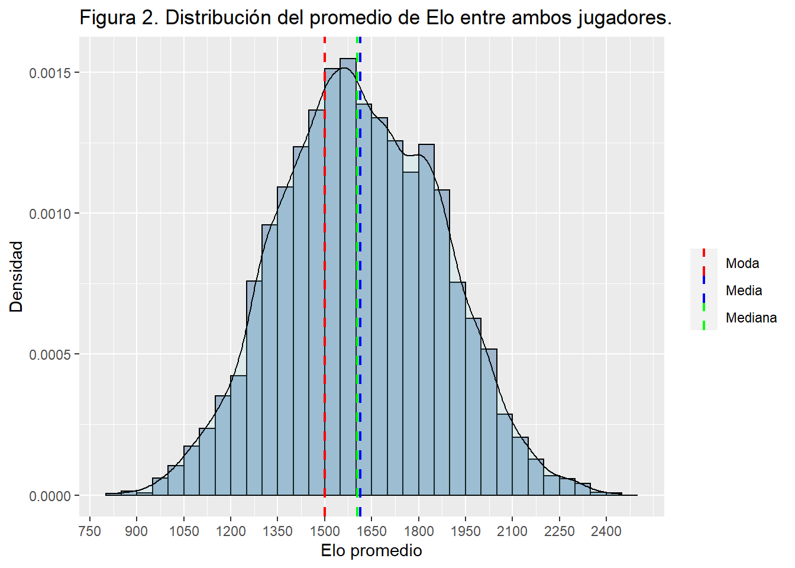

Análisis de partidas de ajedrez
Resumen ejecutivo
El ajedrez moderno es un deporte moderno de modalidad uno contra uno reconocido mundialmente por lo equilibrado que es, es decir, depende en gran medida de la habilidad del jugador y estrategia al momento de disputar una partida, por lo cual a día de hoy existen plataformas en línea que permiten la realización de partidas y competencias entre jugadores de distintas partes del mundo. Con el fin de determinar si este juego competitivo está realmente equilibrado o se encuentra sesgado a favor de un equipo en concreto, se analizó una muestra de 7721 partidas junto a algunos de los factores que podrían influir en el resultado de una partida. Los resultados obtenidos nos indicaron que un jugador clasificado como ‘más habilidoso’ que su oponente tendría mayor probabilidad de ganar. Se concluye que el resultado obtenido en una partida no se encuentra sesgado a favor de ninguno de los equipos.
Introducción
Contexto
El ajedrez moderno es un juego de mesa, el cual, desde su origen oriental, terminó de asentarse completamente a inicios del siglo XVI en el continente europeo. Desde esa época hasta el día de hoy, se ha convertido en un deporte reconocido mundialmente en el que se han realizado una inmensa cantidad de competiciones.
Una partida de ajedrez se disputa entre dos jugadores, uno contra uno; cada uno posee 16 piezas, cada una con su propia particularidad, siendo las de un jugador de color claro, llamadas blancas, y las de su oponente de color oscuro, llamadas negras. Las piezas se mueven sobre un tablero de ajedrez cuadrado de 64 casillas. El ajedrez no es un juego de azar, sino un juego racional y de estrategia, ya que cada jugador decidirá el movimiento de sus piezas en cada turno. Comienza a jugar quien lleve las blancas, lo que le concede una ventaja pequeña pero esencial en los niveles altos de competición.
En la siguiente imagen se da una representación visual de lo descrito al inicio del párrafo anterior:

Planteamiento del caso
Hoy en día existen páginas y plataformas en línea para practicar, disfrutar y competir en este aclamado juego de estrategia, como por ejemplo la plataforma Lichess.org, en la que se empareja a dos jugadores con un nivel competitivo basado en el sistema de clasificación Elo.
Respecto al sistema de puntuación competitivo Elo, resulta relevante aclarar que, dentro de la plataforma Lichess, un jugador con un rango entre 1300 y 1700 se considera promedio, bajo ese rango se puede decir que el jugador es un principiante, mientras que por encima es uno intermedio que empieza a tener un nivel avanzado, y más arriba de 2000 de Elo, se podría considerar un jugador con un nivel bastante avanzado.
Existen determinados factores que pueden afectar o predecir que un jugador gane a otro, ya sea el color de sus piezas, el Elo de los jugadores (que corresponde al nivel competitivo que presenta un jugador dentro de la plataforma), la cantidad de turnos que dura una partida, el tipo de partida, entre otros.
Resulta relevante analizar estos factores, con motivo de estimar cuán equilibrado realmente se encuentra este deporte y su sistema de emperajemientos , si existe tendencia a un resultado debido a un factor específico y cómo varían las partidas dependiendo del nivel de los jugadores, ya que en partidas se enfrenta a jugadores de un nivel competitivo similar.
¿Es este juego realmente equilibrado o se encuentra sesgado en favor de uno de los bandos? ¿Influye el color del equipo en una partida de larga duración? ¿Es el Elo un sistema eficaz para medir el nivel de competencia de un jugador? ¿Influye el Elo de los jugadores en algunos resultados de la partida?
Con objetivo de aclarar estas incógnitas, en este proyecto realizaremos una exploración de los datos de distintas partidas de ajedrez, recabadas en la plataforma en línea “Lichess”, la cual es una plataforma en la que se disputan partidas y torneos de ajedrez diariamente. Analizaremos algunos de los factores que podrían influenciar en la victoria de un jugador por sobre otro y estimar qué tan equilibrado se encuentra este deporte.
Este trabajo se encuentra dividido en tres secciones: En la primera sección presentaremos y describiremos los datos y variables que serán utilizadas y los métodos que aplicaremos para su análisis. En la segunda sección, mostraremos los resultados obtenidos, organizados en base a las variables de interés. Para finalizar, en la tercera sección, presentaremos las conclusiones acerca de las variables que fueron llevadas al análisis y su influencia en el resultado de una partida.
Presentación de los datos
Dentro de esta sección, daremos a conocer las variables que utilizaremos, además de los métodos que aplicaremos para su análisis.
En principio, analizaremos los datos provenientes de 7721 partidas de ajedrez disputadas en la plataforma en línea Lichess.org. La modalidad de estas partidas es “10+0 - Rapid”, que corresponde al tiempo en minutos que puede durar la partida y el tiempo agregado en segundos por turno ejecutado, es decir, analizaremos partidas que pueden durar, como máximo, 10 minutos exactos.
En la siguiente tabla, se presentan las distintas variables de la base de datos con las que trabajaremos, su tipo y una descripción para entender mejor cómo funciona esta.
| Tabla 1. Base de datos de Partidas de ajedrez en línea | |||
| Provenientes de la plataforma Lichess. 7721 observaciones. | |||
| Variable | Traducción | Tipo | Descripción |
|---|---|---|---|
| turns | Turnos | Cuantitativa discreta | Corresponde a la cantidad de turnos que duró la partida. |
| winner | Ganador | Cualitativa nominal | Corresponde al equipo ganador de la partida, ya sea blancas o negras. En caso de haber un empate, no existe ganador, por lo que queda clasificado como 'empate'. |
| white_rating | Elo Blancas | Cuantitativa discreta | Puntos de clasificación Elo del contrincante del equipo blanco. Representa el nivel competitivo del jugador dentro de la plataforma. |
| black_rating | Elo Negras | Cuantitativa discreta | Puntos de clasificación Elo del contrincante del equipo negro. Representa el nivel competitivo del jugador dentro de la plataforma. |
| rating_diff | Diferencia de Elo | Cuantitativa discreta | Diferencia de Elo entre los contrincantes. Si su valor es positivo, indica que el jugador del equipo blanco tiene mayor Elo, y viceversa. |
| mean_rating | Elo promedio | Cuantitativa continua | Corresponde al promedio del Elo entre los dos jugadores. |
| diff_positiva | Diferencia positiva | Cualitativa dicotómica (boolean) | Indica 'TRUE' si existe una diferencia de Elo a favor de equipo de las blancas. En caso contrario indica 'FALSE'. |
| diff_negativa | Diferencia negativa | Cualitativa dicotómica (boolean) | Indica 'TRUE' si existe una diferencia de Elo a favor del equipo de las negras. En caso contrario indica 'FALSE'. |
| diff_cero | Mismo Elo | Cualitativa dicotómica (boolean) | Indica 'TRUE' si ambos jugadores tienen el mismo Elo, es decir, la diferencia de Elo es cero. En caso contrario indica 'FALSE'. |
Fuente: Kaggle.com
Para el caso de los métodos que utilizaremos, nos basaremos principalmente en el uso de gráficos que representen la relación entre las distintas variables, con objetivo de responder a las preguntas hechas en el apartado de la introducción:
-Determinar si es el Elo un sistema eficaz para medir el nivel de competencia de un jugador y la efectividad del emparejamiento.
-Conocer si Influye la diferencia de Elo de los jugadores en el ganador de la partida.
-Determinar si este juego es realmente equilibrado o se encuentra sesgado en favor de uno de los bandos.
-Saber si Influye el color del equipo en una partida de larga duración.
Análisis de resultados
Dentro de esta sección, procederemos con el análisis de datos y la presentación de los resultados obtenidos en base a la observación de gráficas.
A continuación, en la Figura 1, nos encontramos con un gráfico de puntos en el que podemos observar la relación entre el nivel competitivo de dos jugadores en una partida. Cada punto representa una partida, mientras que su posición indica el Elo de cada contrincante:
Podemos observar claras tendencias de que se empareja a jugadores con un Elo similar entre sí. Existe un patrón de proporción directa entre el nivel competitivo de un jugador respecto a su contrincante.
Podemos observar, además, una cruz formada con centro, marcado como un punto de color rojo, en las coordenadas (1500, 1500) aproximadamente. También es posible apreciar, mediante esa cruz, que existe una cierta tendencia a emparejar a un jugador con un Elo de 1500 aproximadamente contra otro que puede tener un Elo bastante superior como inferior.
En el siguiente histograma de la Figura 2 podemos entender de mejor manera lo estimado en el párrafo anterior:

Podemos notar, en base a la figura anterior, que existe una tendencia a emparejar partidas cuyo promedio de Elo entre los jugadores enfrentados se encuentra mayoritariamente entre 1500 y 1800.
Cambiando de enfoque, en las siguientes figuras nos centraremos en analizar la relación entre el equipo ganador de la partida y distintas variables.
En la figura 3 observaremos la relación entre la diferencia de Elo y el equipo ganador:

Podemos fabricar una tabla para ver de mejor manera las proporciones de nuestros valores:
| Characteristic | Blancas, N = 3,8441 | Empate, N = 3161 | Negras, N = 3,5611 |
|---|---|---|---|
| Diferencia Positiva (+) | 2,482 (65%) | 144 (46%) | 1,204 (34%) |
| Diferencia Negativa (-) | 1,336 (35%) | 169 (53%) | 2,313 (65%) |
| Mismo Elo | 26 (0.7%) | 3 (0.9%) | 44 (1.2%) |
| 1 Frecuencia (%) | |||
Podemos observar que, para el caso en que el equipo ganador es el de las Blancas, la diferencia de Elo se concentra mayoritariamente en los valores positivos, mientras que, por el caso contrario, cuando ganan las Negras la diferencia de Elo tiende a concentrarse en valores negativos. En el caso de empate, la distribución de la diferencia de Elo se encuentra más equilibrada y centrada en el valor cero. Todo lo anterior nos indicaría que un jugador con mayor nivel competitivo suele ganarle a uno de menor nivel competitivo.
Siguiendo con el análisis respecto al equipo ganador, en la figura 4 observaremos la relación entre el número de turnos que dura una partida y el equipo ganador en cuestión:

Podemos notar que en su mayoría, las partidas no suelen durar más de 100 turnos antes de que gane un jugador. Además, la distribución de los turnos es bastante similar para ambos casos. El caso de Empate es una excepción, ya que la cantidad de partidas empatadas es mucho menor en comparación a los otros dos casos, por lo que opinar sobre ellas estaría sesgado, pero en base a lo obtenido, podemos afirmar que en partidas de mayor duración suele haber mayor probabilidad de empatar.
Para terminar con esta sección, en la siguiente figura observaremos la relación entre el número de turnos y la diferencia de Elo:

Podemos apreciar una forma parecida a la de un “bulbo” generada por las observaciones de la gráfica centrada en cero. En base a la gráfica, podemos estimar que mientras mayor es la diferencia de Elo, menos turnos duran las partidas. Por otro lado, mientras menor es la diferencia de Elo, es más probable que las partidas duren más turnos, sin embargo, también existe una buena cantidad de partidas en las que la diferencia de Elo era baja y la cantidad de turnos que duró también lo era.
Conclusión
Llegados a esta sección, nos encontramos con las conclusiones obtenidas en base a nuestros análisis. Tal como se mostró a lo largo de nuestro reporte, intentamos responder las preguntas formuladas y establecidas como objetivos en los apartados anteriores:
Determinar si es el Elo un sistema eficaz para medir el nivel de competencia de un jugador y la efectividad del emparejamiento: Sí, el sistema de clasificación Elo funciona de manera correcta, según lo visto en los análisis de las figuras.
Conocer si Influye la diferencia de Elo de los jugadores en el ganador de la partida.
Determinar si este juego es realmente equilibrado o se encuentra sesgado en favor de uno de los bandos.
Saber si Influye el color del equipo en una partida de larga duración.
A partir de los datos presentados y nuestro análisis de resultados, podemos afirmar que los emparejamientos entre jugadores es ejecutado correctamente en la mayoría de los casos, ya que, según lo visto en las figuras 1 y 2, se suele emparejar a jugadores con Elo similar.
Por otra parte, en base a la figura 3 y la tabla ligada a ésta, podemos notar que la diferencia de Elo juega un papel clave en cuál será el equipo ganador, con esto nos referimos a que una diferencia de Elo a favor de un equipo incrementa sus posibilidades de victoria, indicándonos, es decir, es más probable que un jugador clasificado como “mejor” que su contrincante gane. Además, podemos afirmar que una partida en la que hay menor diferencia de Elo suelen durar más.
Por último, respecto al color del equipo en una partida, podemos afirmar que la distribución de victorias entre equipo “Negras” y “Blancas” es bastante parecido, por lo que cabría decir que no existe un gran sesgo a favor de un equipo por sobre el otro.
Considerando los datos utilizados, nos encontramos muy limitados en cuanto al análisis, por lo que si quisiésemos realizar un nuevo análisis a futuro, sería relevante tomar en cuenta tecnisismos avanzados como los movimientos utilizados por los jugadores o estrategias establecidas, ya que con ello se posibilitaría hallar nuevas tendencias o patrones que posibiliten en mejor medida el conocer el resultado obtenido en una partida.